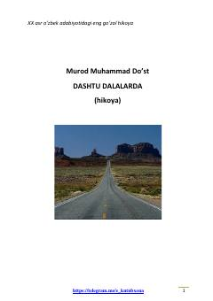

DDXotini tashlab ketgan polvonning cho'ldagi yolg'iz hayoti va ruhiy kechinmalari haqidagi hikoya.
Mazkur asar o'zbek adabiyotidagi eng go'zal hikoyalardan biri bo'lib, xotini tashlab ketgan Polvonning cho'ldagi yerto'ladagi yolg'iz hayoti, kechinmalari va o'tmish xotiralari haqida hikoya qiladi. Asarda qahramonning ruhiy azoblari, oilaviy munosabatlar va qishloq hayotining o'ziga xos manzaralari ta'sirli tarzda ochib berilgan.